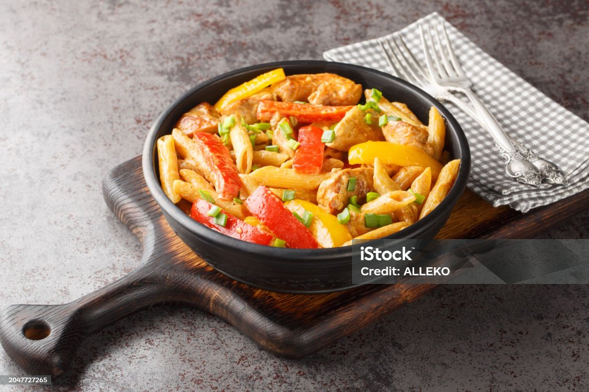

Rasta Pasta Recipe

Description
Rasta pasta is a colorful and flavorful pasta dish made with bell peppers, onions, and jerk seasoning.
Indgredients
- 1 lb pasta
- 1/4 cup olive oil
- 1/2 cup bell peppers
- 1/2 cup onions
- 1/4 cup jerk seasoning
- 1/4 cup heavy cream
- 1/4 cup grated cheese
Steps
- Cook pasta according to package instructions.
- Heat olive oil in a pan over medium heat.
- Add bell peppers and onions to the pan and sauté until soft.
- Stir in jerk seasoning and cook for 2 minutes.
- Add heavy cream to the pan and simmer for 5 minutes.
- Combine cooked pasta with the sauce.
- Serve with grated cheese on top.
Home